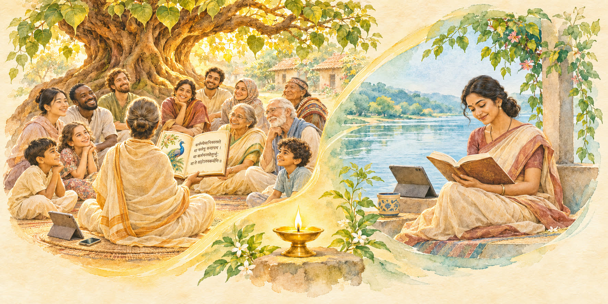

Learn your way.
Bhagavadgita has universal truths that is applicable across age, gender, nationality, culture and belief. Listen & contemplate these truths in the company of an Acharya and fellow seekers, or explore the Gita in your own time. These two complimentary paths illuminate the inward journey towards your divine self.

Truth · Realise · Use
Learning Experiences
Explore Experiences.
Various learning experiences for inner transformation in the classical vedantic style of sravana-manana-nidhidhyasa (truth heard, to truth examined, to truth realised and used.) Learning experiences use contemporary situations and is designed for modern “scientific” mind.